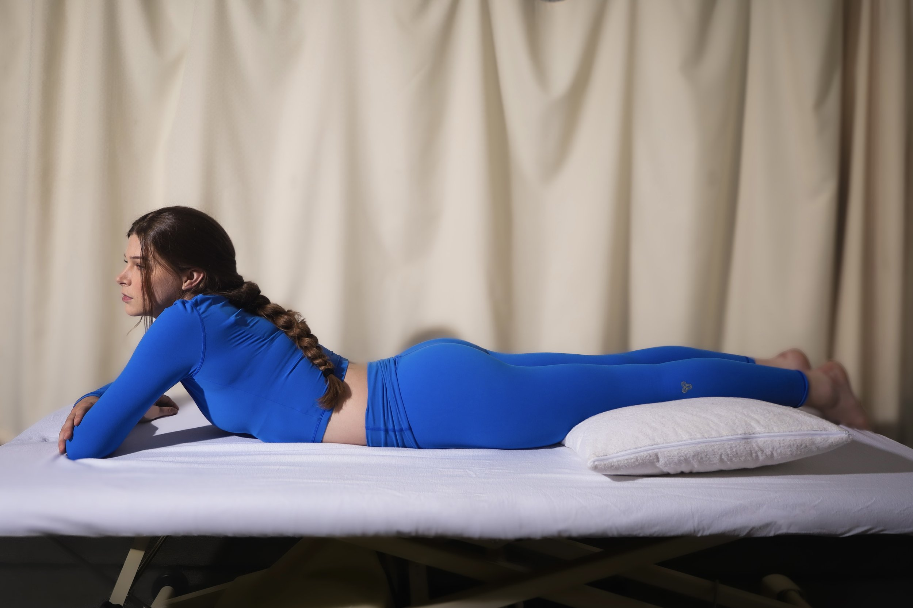

Schroth Method
The scoliosis treatment
most patients never hear about.
If you or someone you love has scoliosis, you may have been told to watch and wait, or that bracing or surgery are the only options that matter. The Schroth Method is the evidence-based, non-surgical alternative most patients never hear about: three-dimensional correction through breath, posture, and targeted movement, while meaningful change is still possible.
Book an evaluation
The method
The Schroth Method corrects scoliosis in three dimensions. Breath, posture, and movement trained together.
Conventional PT treats scoliosis as a back problem. Schroth treats it as a three-dimensional pattern, a rotation and curve that runs through the whole spine and ribcage. The exercises, breath patterns, and postural corrections are designed specifically for curved spines, not adapted from general rehab.
Most patients complete a course of 8 to 12 sessions, with a written home program to maintain progress between visits. Every Schroth case at the clinic is led by a Level 2 Schroth-certified clinician.
Why it works here
One clinician. Every session. The breath correction is the exercise.
Every case is managed by the same clinician from evaluation to discharge. No handoffs. The correction is built into the breath: rotational breathing is not an adjunct to the movement, it is the movement.
The home program is small by design. Two or three targeted exercises, done daily. Adherence matters more than volume.
Questions
-
How is Schroth different from regular PT for scoliosis?
Regular PT for scoliosis tends to use generic core-strengthening and stretching exercises that aren't designed for a curved spine. The Schroth Method uses three-dimensional rotational breathing and posture corrections specific to the patient's curve pattern. It's a different discipline, not a variation.
-
How many sessions will I need?
Most patients complete 8 to 12 sessions. Adolescents in an active growth period may need more, especially if working alongside a brace program. We assess at mid-course and again at the end to decide whether to continue.
-
Is it appropriate for adults, or just adolescents?
Both. Adolescents in growth phases see the most structural change. Adults benefit significantly from pain reduction, improved posture, and preventing further progression, especially for curves above 40 degrees.
-
Do I still need to see my orthopedic surgeon?
Yes, and we coordinate with them. Schroth PT and orthopedic monitoring work together, we don't replace your surgeon, we work alongside them. We can send progress notes directly if that helps.